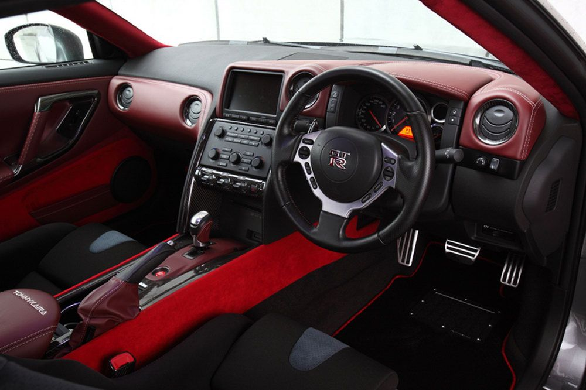
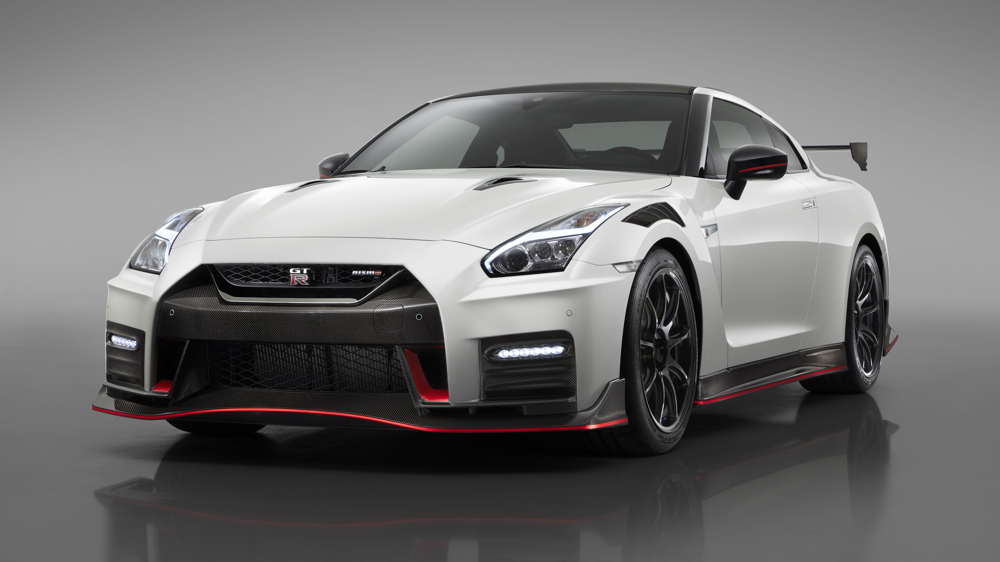
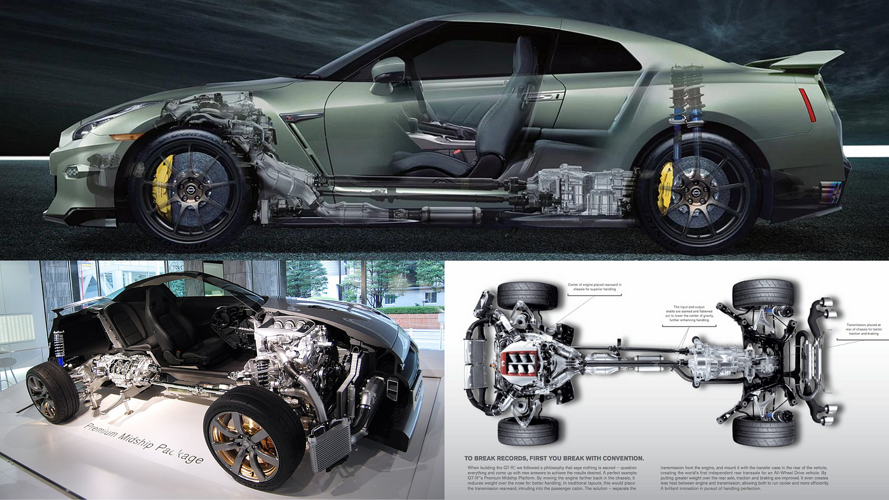

|
Overview |
Designer |
Body and chassis |
|---|---|---|
| Manufacturer : Nissan Model code : R35 Production : December 2007 - present Model years : 2009-present Assembly : Japan, Kaminokawa, Tochigi |
Engine: Naoki Nakada |
Class : Sports car/Grand tourer (S) |
InteriorGT-R has a hand stitched premium leather interior, embedded on the dashboard, steering wheel, door panels, centre console and seats. Motor Trend claimed the car has one of the most finely crafted interiors despite its marginally lower price.[91] Carbon-fibre is used in the centre console and in the gauge cluster, which features an analog speedometer, fuel meter and tachometer with a redline of 7,000–7,100 rpm. Digital displays featuring traveling speed, gear, fuel economy and distance calculations. GT-R badged steering wheel contains volume controls and cruise control buttons. Magnesium paddle shifters are on the wheel column in earlier models and on the steering wheel in post 2017 facelifted models. The instrument cluster is angled towards the driver, featuring air conditioning controls, audio set-up controls and drive mode selectors. Centre console features the engine start/off button, leather–wrapped shift liver, parking brake and an armrest with a small storage area inside and a USB port. The car is fitted with an 11-speaker Bose sound system. |
 |
|  | ExteriorAccording to chief design director, Shiro Nakamura, "aero blade" front fenders, blackened A-pillars and the slopping roofline of the GT-R are inspired by the giant robots of the Gundam series.[86] Nakamura stated: "The GT-R is unique because it is not simply a copy of a European-designed sports car; it had to really reflect Japanese culture". Nissan's American designers sculpted the rear three-quarters of the vehicle, while their European designers sculpted the roofline.[86] Nissan developed a 6-stage paint process with a double clear coat and chip-resistant paint for use in critical areas of the chassis. An optional liquid-effect finish employs a hand-polished 8-stage process with product-specific colours, such as the original Super Silver metallic paint, with three layers of clearcoat. |
ChassiAccording to chief design director, Shiro Nakamura, "aero blade" front fenders, blackened A-pillars and the slopping roofline of the GT-R are inspired by the giant robots of the Gundam series.[86] Nakamura stated: "The GT-R is unique because it is not simply a copy of a European-designed sports car; it had to really reflect Japanese culture". Nissan's American designers sculpted the rear three-quarters of the vehicle, while their European designers sculpted the roofline.[86] Nissan developed a 6-stage paint process with a double clear coat and chip-resistant paint for use in critical areas of the chassis. An optional liquid-effect finish employs a hand-polished 8-stage process with product-specific colours, such as the original Super Silver metallic paint, with three layers of clearcoat. |
 |